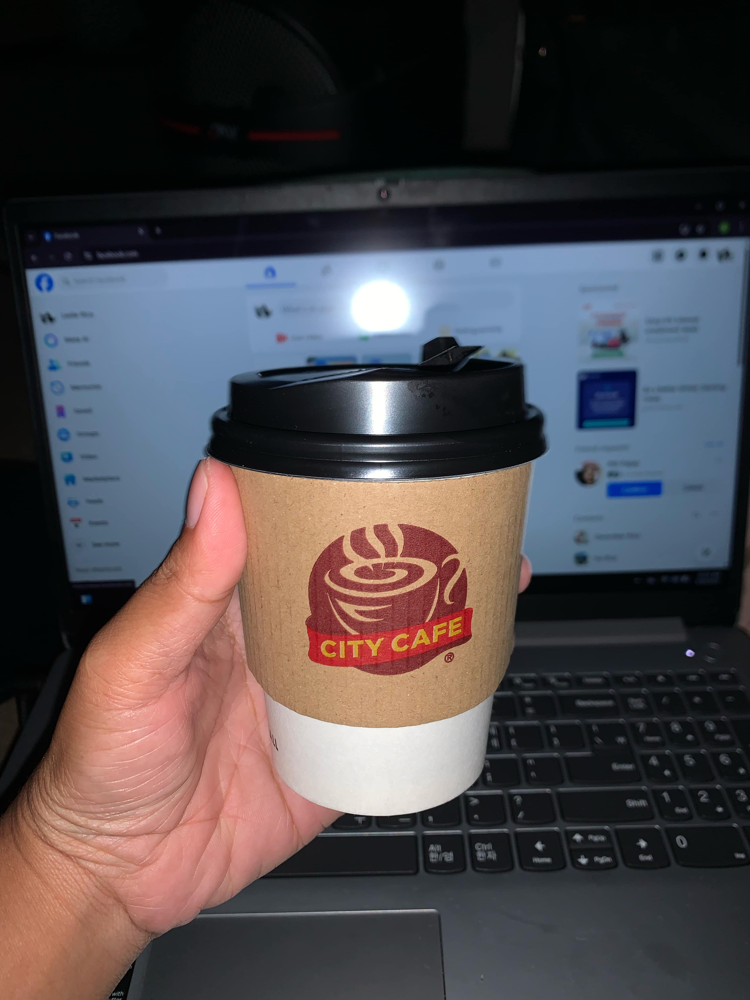
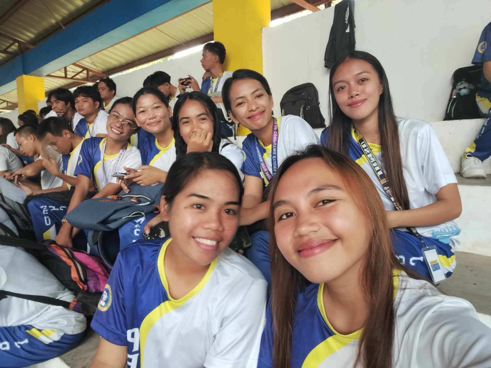

Hi I'm Working Student
Leslie
Hey there! 👋 Welcome to my portfolio — a look into how I balance work and studies. Feel free to explore and pick up tips, insights, or maybe even some inspiration along the way!
My Journey
Challenges, milestones, and growth as a working student.
Challenge: Late-Night Study
After long shifts, I still dedicate time to study and prepare for exams.
Milestone: Work Achievements

Staying committed to my job while studying full-time proved that discipline is a choice I can keep making..
Milestone: Project Presentation
Managed to present confidently in class despite feeling tired from work.
Breakthrough: Time Management

Found balance using schedules and prioritizing tasks smartly.
Strategies and Works
Time management techniques, tools I use, and study habits.
Weekly Planning
Every Sunday, I plan my week using Google Calendar and Notion. I block out time for classes, work, study, and rest to avoid overbooking and stay organized.
Task Breakdown
I break big assignments into smaller, daily tasks. This makes progress manageable and helps me avoid last-minute stress.
Pomodoro Technique
I use the Pomodoro method (25 minutes focus, 5 minutes break) to keep my energy up and avoid burnout during long study sessions.
Digital Tools
Apps like Notion, Google Keep, and Forest help me track tasks, take notes, and stay focused.
Self-Care & Breaks
I schedule regular breaks for coffee, walks, or quick chats with friends. Rest is essential for productivity and mental health.
My Skills
Building the structure and content of web pages for a solid foundation.
Styling and making layouts responsive for all devices and screen sizes.
Adding interactivity and dynamic features to enhance user experience.
Blog
My Top 5 Time Management Tips as a Working Student
Being a student is already a full-time job. Add part-time work on top of that, and it’s easy to feel like there aren't enough hours in the day. Through trial and error, I’ve discovered a few strategies that help me stay productive, meet deadlines, and still have time to breathe. Here are my top 5 time management tips that keep me grounded as a working student.
1. Plan Ahead Using Digital Tools
I live by my calendar. Every Sunday, I plan my week using Google Calendar and Notion. I schedule not just classes and shifts, but also study blocks, errands, and even downtime. Seeing everything in one place helps me avoid overbooking myself.
🛠 Tip: Color-code your calendar—classes in blue, work in orange, personal time in green.
2. Break Tasks Into Smaller Goals
Large assignments or projects can feel overwhelming when your time is limited. I break them down into manageable steps and spread them across multiple days. This makes progress feel achievable even on a tight schedule.
✅ Example: Research (Monday), Outline (Tuesday), Draft (Wednesday), Edit (Thursday)
3. Use Time Blocks and Pomodoro
When I sit down to study, I use time blocking and the Pomodoro Technique (25 minutes focus, 5-minute break). It keeps my energy and focus sharp, even after a long shift.
🧭 I also block out “dead zones” like late afternoons when I tend to be tired—this helps me avoid frustration and plan lighter tasks during that time.
4. Learn to Say No
You can’t do everything. If something doesn’t align with your priorities (like extra shifts during exam week), it’s okay to say no. Setting boundaries has helped me protect my energy and avoid burnout.
🧠 Remember: “No” to one thing is often a “yes” to rest, study, or peace of mind.
5. Plan for Rest, Not Just Work
Rest is productive. I schedule breaks just like I schedule work or study. Whether it’s watching a show, taking a walk, or journaling, these pauses recharge me and help me avoid burnout.
💡 Bonus: I keep one evening a week “meeting-free” to reset and reflect.